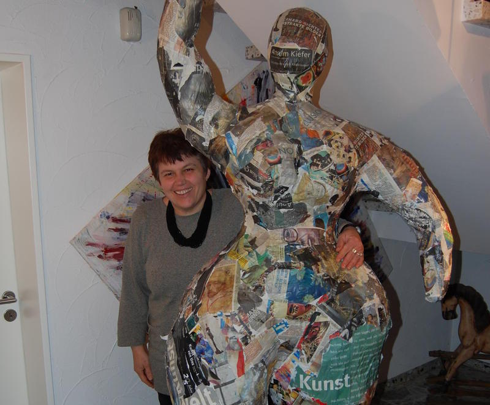
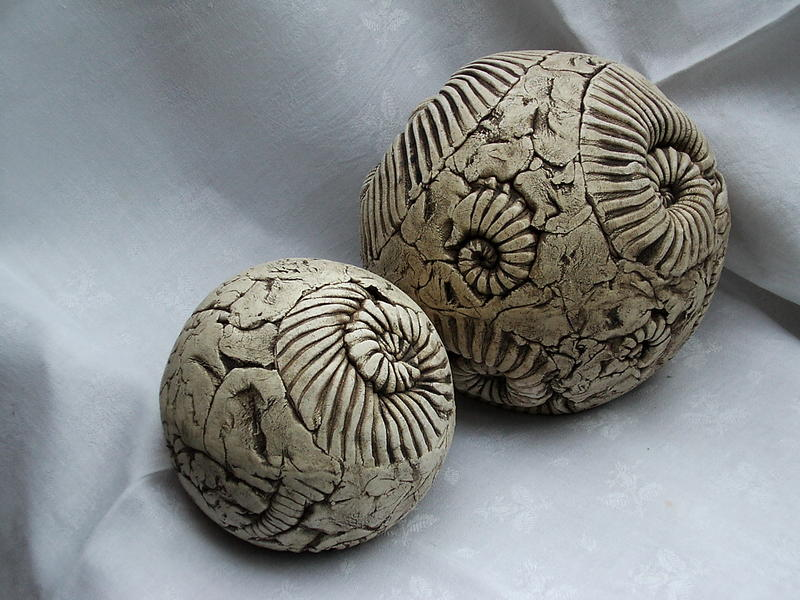
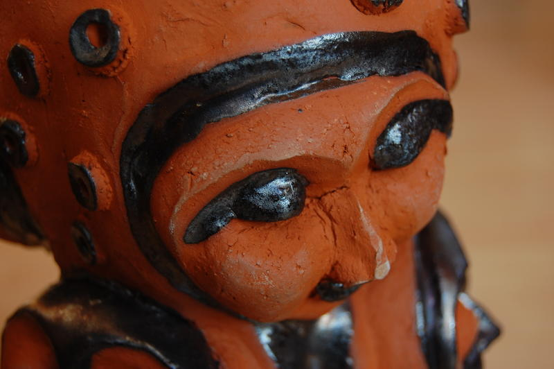
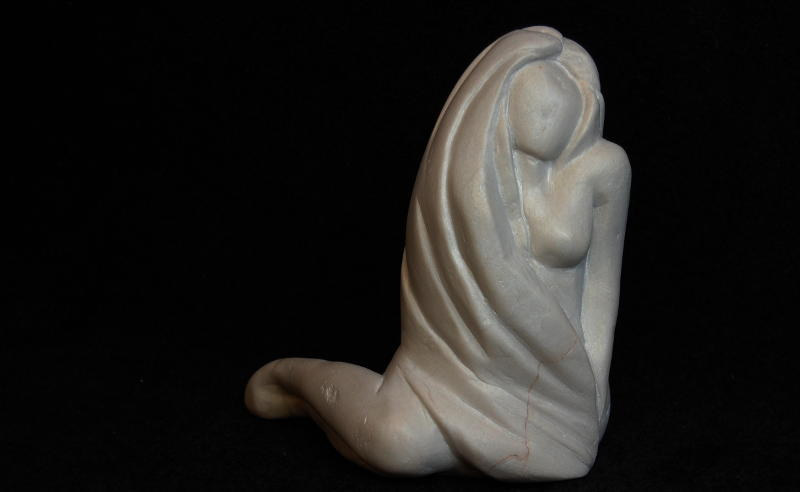
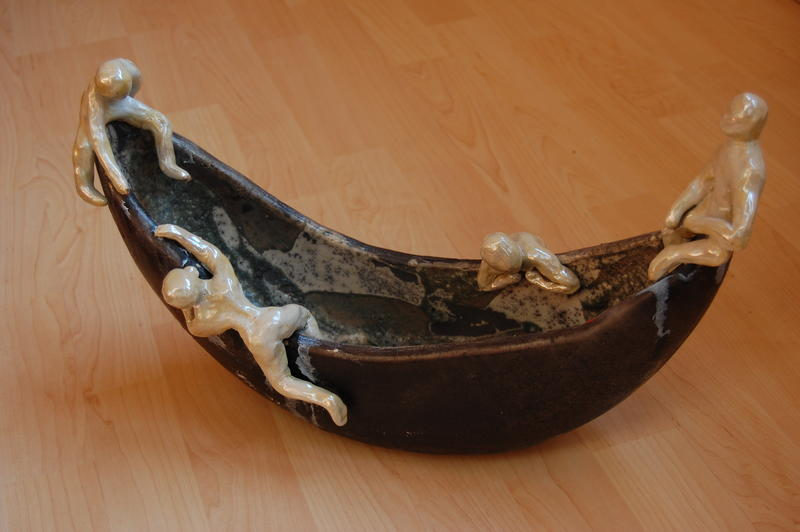
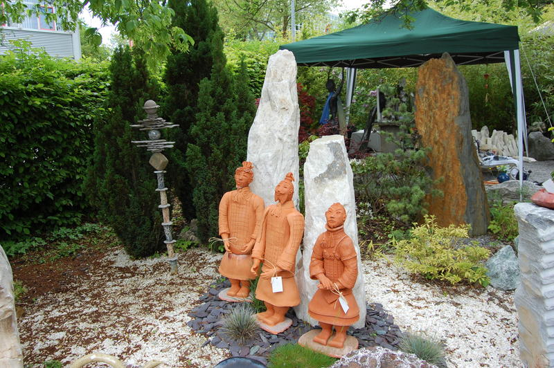
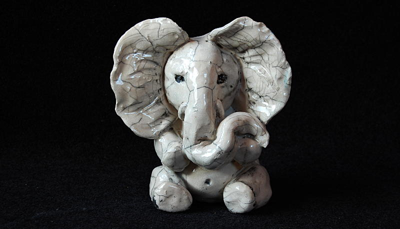
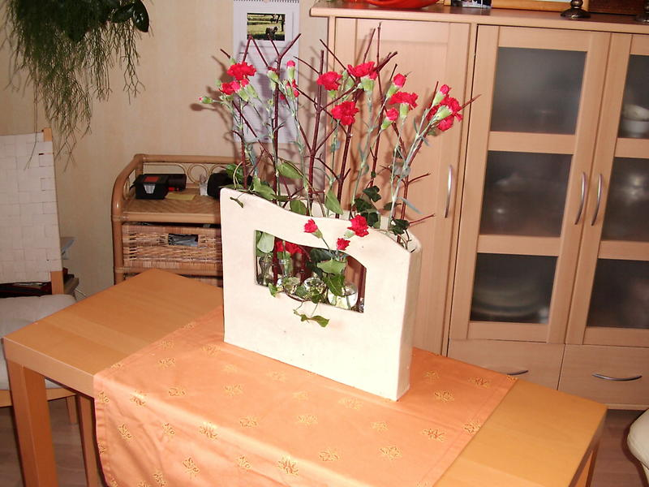
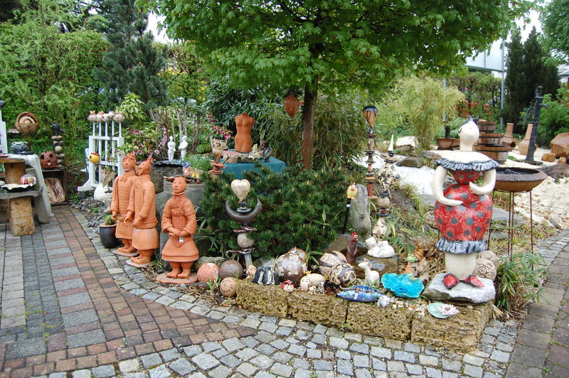
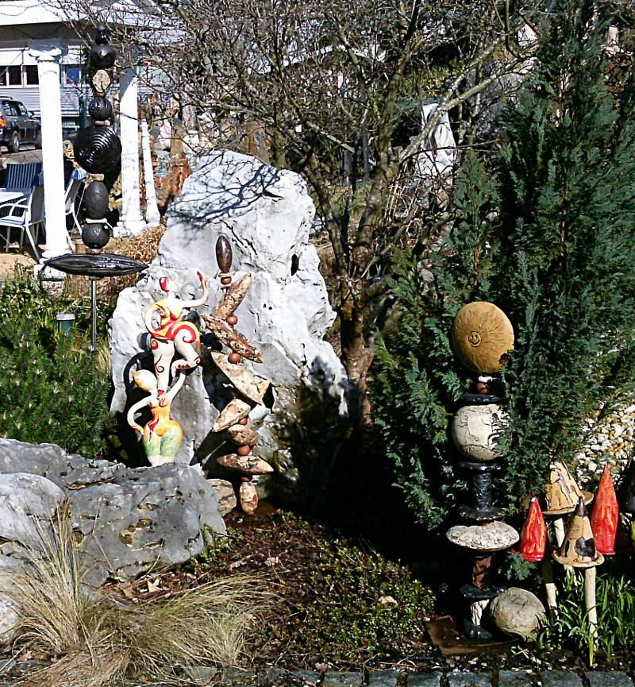

Karin Witte - Kreatives aus Ton
Windmühlenstraße 22
73431 Aalen
| email: | karinwitte@gmx.net |
| Tel.: | 07361 36797 |
private Seite

Zierkugeln in Muscheloptik.
Detail eines Totems.
Frauengestalt aus Speckstein.
Eine Barke als Tischdekoration.
Drei chinesische Terrakottakrieger (ohne Kontrabass).
Ein kleiner Raku-Elefant.
Sommerliche Tischdekoration.

Schönes aus Ton für Haus und Garten im Kreativgarten.
Nächste Termine:
Herstmärktle am Spritzenhausplatz in Aalen am 7. und 8. Oktober 2016
Garagenausstellung Windmühlenstr. 22 in Aalen vom 28.-30. Oktober 2016
